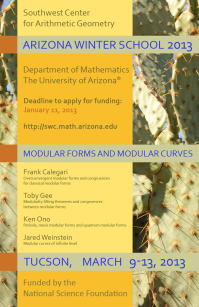

<!-- *** This file was autogenerated by the SCAG Python HTML Templating System *** -->
<!-- *** DO NOT EDIT THIS FILE!!!  Instead edit the corresponding .html.in file! *** -->
<div style="float: right;">
  <a href="../../aws/2013/2013Poster-small.jpg">
    
  </a>
</div>

<h2>Arizona Winter School 2013: Modular forms and modular curves</h2>

<p>
    The 2013 AWS will be held March 9-13, 2013 at the
    University of Arizona in Tucson, AZ.
</p>

<ul>
    <li>
        <b><a href=http://swc-alpha.math.arizona.edu/register/>Click
        here to register and/or apply for funding.</a></b>
        <br />
        Registration is open to all.  The deadline to apply for
	funding is <b>January 11, 2013</b>.
    </li>
    <li style="display: none;">
      <a href="../../aws/12/schedule.html">Schedule and other important
      information</a>
    </li>
    <li>
      Speakers:
      <ul>
        <li><b><a href="http://www.math.northwestern.edu/~fcale/">Frank Calegari<a></b>: Overconvergent modular forms and congruences for classical modular forms</li>
        <li><b><a href="http://www2.imperial.ac.uk/~tsg/">Toby Gee</a></b>: Modularity lifting theorems and congruences between modular forms</li>
        <li><b><a href="http://www.mathcs.emory.edu/~ono/">Ken Ono</a></b>: Periods, mock modular forms and quantum modular forms</li>
        <li><b><a href="http://math.bu.edu/people/jsweinst/">Jared Weinstein</a></b>: Modular curves of infinite level</li>
      </ul>
    </li>
    <li>
      Organizers: Mirela Ciperiani and David Savitt (main program),
      with Bryden Cais, Matthew Papanikolas, Rachel Pries, and Romyar Sharifi.
    </li>
</ul>
